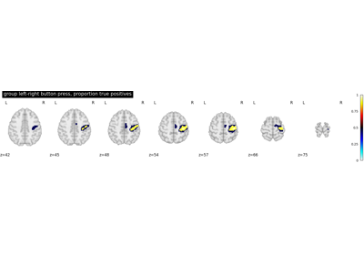
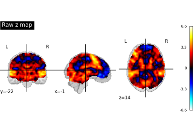
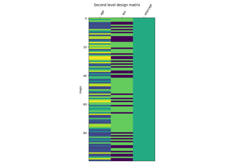

9.8.5. GLM : Second level analysis examples¶
These are examples focused on showcasing second level models functionality and group level analysis.
See Analyzing fMRI using GLMs for more details.


Second-level fMRI model: true positive proportion in clusters
Second-level fMRI model: true positive proportion in clusters

Statistical testing of a second-level analysis
Statistical testing of a second-level analysis

Voxel-Based Morphometry on OASIS dataset
Voxel-Based Morphometry on OASIS dataset


Second-level fMRI model: two-sample test, unpaired and paired
Second-level fMRI model: two-sample test, unpaired and paired